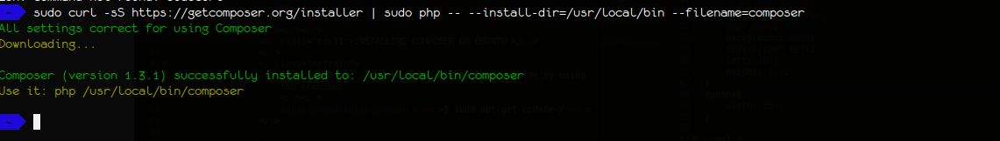

SIMPLE FB CONNECT
Simple FB Connect is a Drupal Module which allows the users to Login and Register to your Drupal site with their Facebook Account.
View Project.
COMPOSER
Composer is an application-level package manager for the PHP programming language that provides a standard format for managing dependencies of PHP software and required libraries. It was developed by Nils Adermann and Jordi Boggiano, who continue to manage the project.
Composer Official Site : https://getcomposer.org/.
- INSTALLING COMPOSER ON UBUNTU
1. Update the package manager cache by using the command:
$ sudo apt-get update
2. Now install the dependencies for running and installing Composer using the command :
$ sudo apt-get install curl php5-cli git
3. Now downlaod Composer using the following command:
$ curl -sS https://getcomposer.org/installer | sudo php -- --install-dir=/usr/local/bin --filename=composer

4. To check if Composer is working fine, use the command $ composer and if it shows the same as the image then it works fine.
- INSTALLING SIMPLE FB CONNECT MODULE
1. Go to Drupal root directory and use the below comamnd to inform Composer that we want to use packages.drupal.org/8 as a package repository:
$ composer config repositories.drupal composer https://packages.drupal.org/8
2. Downlaod the latest version of 8.x-3.0 release of Simple FB Connect by using the following command:
$ composer require "drupal/simple_fb_connect:~3.0"
- ENABLING SIMPLE FB CONNECT MODULE
1. Go to /admin/modules and install the Simple FB Connect Module:
2. Now go to Simple FB Module settings /admin/config/people/simple-fb-connect
Here we will find Valid OAuth redirect URIs, App Domains and Site URLs for your Facebook App settings.
- CREATING A FACEBOOK APPLICATION
1. Go to https://developers.facebook.com/apps and click on Add a New App . A window will pop-up, fill in the details and create the App ID.
2. You will be directed to the dashboard, click on Get Started button on Facebook Login Tab. After that enter the Valid OAuth redirect URIs from the module settings to the Valid OAuth redirect URIs Field in the Facebook login page.
3. Go to Basic Settings and enter the Website URL and App Domain.
4. Go to App Review and make the app public if you want other users can also login with their facebook accounts.
- UDATING THE SIMPLE FB CONNECT MODULE
1. Go to admin/config/people/simple-fb-connect and add the Application ID, App Secret and API Verion of the Facebook Application from the Facebook Application Dasbaord.
- We have now installed the module. To check if it works properly or not, go to the Website and while Login, we will notice "Facebook Login" option.

# So, in this tutorial we installed Simple FB Connect Module with dependency on External Libraries using Composer .